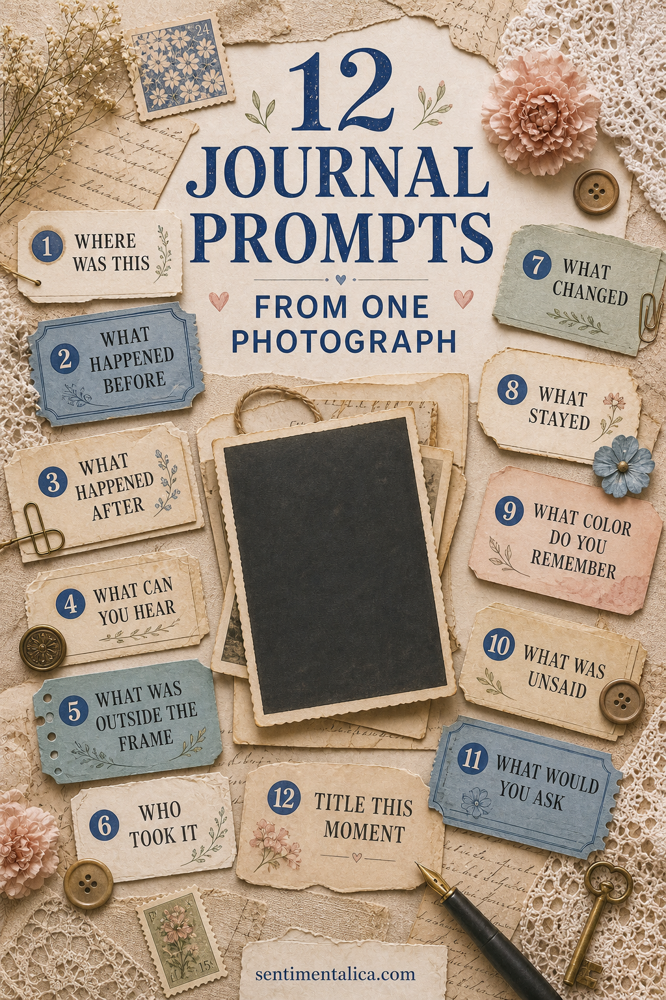

A photograph preserves one visible moment, but a journal can hold everything the image leaves out. You do not need to know every name or date. Curiosity is enough to begin.

Begin with place
Where was this? Write what you know, then separate it from what you guess. Describe the room, road, garden, or weather. If the location is unknown, list three visual clues and the place each clue suggests.
Move before and after the shutter
What happened five minutes before the photograph? What happened after everyone stepped away? These two prompts turn a still image into a sequence. Keep the answer small and sensory rather than inventing an entire biography.
Listen to the photograph
What can you hear? Imagine nearby traffic, dishes, wind, conversation, music, or silence. Then ask what was outside the frame. A missing person, doorway, table, or landscape may explain why the picture was taken.
Ask who held the camera
Who took it, and why were they not in the picture? The photographer is part of the memory even when unseen. If you can, record how the image reached you and who kept it safe.
Notice change and continuity
What changed after this moment? What stayed? A house may be gone while a family recipe remains. A child may grow while a familiar expression returns in another generation. Pair one change with one continuity.
Recover color and silence
What color do you remember, even if the picture is monochrome? What was unsaid? These questions invite emotion without requiring certainty. Use phrases such as “I imagine” or “I wonder” when the answer is not known.
Ask across time
If you could ask one person in the image a question, what would it be? Avoid a list. Write the single question that carries the most tenderness or curiosity, then leave space beneath it for a future answer.
Title the moment
Finish with a title of five words or fewer. It may name the place, feeling, weather, or mystery. A title helps the page hold together when your notes move between fact, memory, and imagination.
Preserve the photograph safely
Use a scan or copy for cutting and gluing. Keep an original family photograph in an archival sleeve, away from light and adhesive. Add the names and source to the back of the copy so the context travels with it.
Try a fifteen-minute writing session
Choose only three prompts: one factual, one sensory, and one imaginative. Set a short timer and write without stopping to correct the page. Mark uncertain details with a question mark. This keeps memory, inference, and fact distinct while allowing the story to move.
When the timer ends, underline one sentence worth keeping. Copy that line onto a small card beside the photograph and place the longer notes in a pocket behind it.
Invite another person's memory
If someone else knows the image, ask them the same three questions separately. Record their exact phrasing and name the speaker. Differences are not mistakes; they show how one moment can live differently in several people.
Image note: Some visuals in this article were created with AI and curated by Sentimentalica.